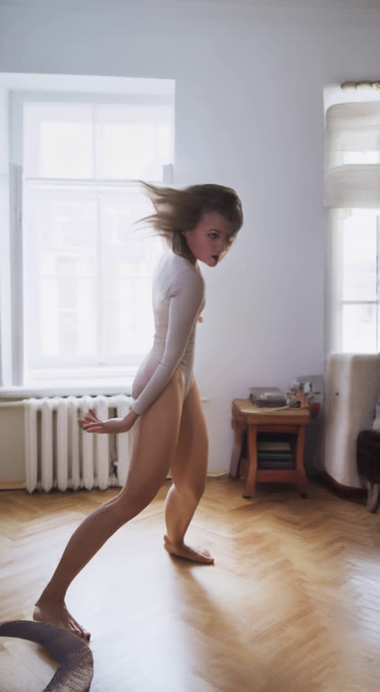

case12 A · DD Stage3 同输入回归检查
这是最初三例中的简单室内舞蹈 case12。旧 DD Stage3 为 f171–f203 共 33 帧；当前代码将复用同一张 Stage2 末帧、同一源动作 MP4、相机半径和 Pi3X 几何重跑 33 帧。A 是 VLM 候选编号，不是人工标注最好。
源视频：a-woman-dancing-alone-at-home-5743004.mp4；源范围 f171–f203；Stage2 左转 35°；基模：Wan2.2 TI2V-5B + DepthDirector LoRA。原始 Stage2 末帧 SHA256：1156f216fa6ae8dded7be193f6c5b8bbc365192d8ba444c5029f82fcc9eae9f5。源动作 MP4 SHA256：91d35c24da153dab5c209297bd1f25605f169d1bb72f33d5c8c00c7443cfef02。
当前代码重跑：33/33 帧完成，首帧、源动作、相机、几何和 prompt 审计一致；初始噪声 SHA 相同：True。旧/新解码帧平均像素差 0.00/255。画质仍需目视判断。

两次 DD 共用的 Stage2 原生末帧
对照成立条件：首帧 PNG SHA、源动作 MP4 SHA、Stage2 相机、Pi3X 几何、33 帧原生长度均一致。不同输出还会检查生成参数和采样随机性，避免直接把差异解释成模型退化。